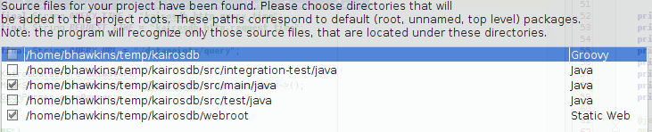

目录:
KairosDB 运行在java1.6及以上版本
- 下载 tar.gz 文件 从官网下载地址
- 解压到你想存放的地方
- 在 conf/kairosdb.properties 修改 kairosdb.service.datastore 属性为您想使用的数据存储方式. 默认使用基于内存存储的H2数据库(这是慢的 退出后数据会丢失)
- 确保已经正确安装jdk并且设置JAVA_HOME
- 切换到bin目录并且运行 >./kairosdb.sh run
如果你有很多的客户端推送度量数据,这可能会耗尽系统的打开文件句柄。我们建议增加文件句柄的数量。这是一个例子 [http://tech-torch.blogspot.com/2009/07/linux-ubuntu-tomcat-too-many-open-files.html 修改CentOS的文件打开上限].
KairosDB 可以配置使用一个后端存储引擎作为数据持久化方式. KairosDB默认使用H2内存数据库存储datapoints(数据点). 改变所使用的数据存储方式 kairosdb.service.datastore 属性 在kairosdb.properties 文件中.
kairosdb.service.datastore=org.kairosdb.datastore.h2.H2Module
KairosDB默认使用H2内存数据库存储 这允许你做开发工作时在没有设置数据存储为Cassandra或者HBase的情况下能直接运行
kairosdb.service.datastore=org.kairosdb.datastore.cassandra.CassandraModule
使用Cassandra的默认配置是使用行存储数据。每一行将包含3周的数据。 设置为3周的原因是如果你每毫秒写入一个度量指标，3周刚好超过10亿列。 Cassandra有20亿个列的限制。
行大小一直有些困惑。基本上它可以归结为这样: 更多的数据可以存入一行以便更好的进行数据查询。 但这并不意味着cassandra只支持保存3周的数据, 这意味着数据写入同一行每3周新的数据去保存到下一个新行。 参见[CassandraSchema cassandra schema for more details].
更改 read_repair_chance: 这个值告诉cassandra多久执行一个读修复。 读修复机会将默认为1(100% ). 推荐值为0.1 (10% ). 改变方法运行cassandra-cli 并执行以下命令
> use kairosdb;
> update column family data_points with read_repair_chance = 0.1;
> update column family row_key_index with read_repair_chance = 0.1;
> update column family string_index with read_repair_chance = 0.1;
对于选项的完整列表,请参见cassandra部分在 kairosdb.properties.
| kairosdb.datastore.cassandra.host_name | Cassandra 服务器的主机名或者ip地址 |
| kairosdb.datastore.cassandra.port | Cassandra 端口号 |
| kairosdb.datastore.cassandra.replication_factor | 写数据到Cassandra的复制因子 [http://www.datastax.com/docs/1.0/cluster_architecture/replication 查看更多] |
| kairosdb.datastore.cassandra.write_delay | 在写数据到Cassandra时的后台线程等待的时间。这允许批处理数据到数据存储组件中 |
| kairosdb.datastore.cassandra.single_row_read_size | 列数读的时候读一行。 这是一个平衡性能和内存使用的配置。 这个值时使用查询row key索引和执行后续查询时一行在最初的多。 |
| kairosdb.datastore.cassandra.multi_row_read_size | The number of columns read on the initial multi get for a query. If your data has very few tags make this number big. If your metrics have lots of tag combinations then back this number down or you may run into out of memory issues. |
HBase 基本不再支持。 (由于历史遗留原因这里也不在翻译) Originally the HBase support was achieved by forking the OpenTSDB code base and making it into a Datastore plugin for KairosDB. The functionality of KairosDB has moved beyond what HBase code can support.
kairosdb.service.datastore=org.kairosdb.datastore.remote.RemoteModule
作为远程数据存储设置本地Kairos实例，存储和转发传入的数据点到远程Kairos服务器。数据存储在一个目录使用json格式 在一个可配置的后台调度线程上将压缩数据上传到远程Kairos数据库实例。
| kairosdb.datastore.remote.data_dir | Directory in which the data points are collected. Defaults to the current directory. |
| kairosdb.datastore.remote.remote_url | URL of the KairosDB instance to which data will be forwarded. Ex. http://10.10.10.10:8080 |
| kairosdb.datastore.remote.schedule | Quartz cron schedule for how often to upload collected data. |
在bin目录中 启动和停止是通过运行kairosdb.sh脚本。
启动作为前台进程 命令行退出即程序退出
> ./kairosdb.sh run
启动作为后台进程
> ./kairosdb.sh start
停止正在运行的后台进程
> ./kairosdb.sh stop
假设你有一个图形数据显示每1小时的平均数据在一个星期。你更新这张图一天几次,每一次你的代码查询一周的数据总量。每次运行该查询时你将重新处理99%的相同的数据，处理你最后一次运行查询，可以做些什么?
这里有一些策略:
其他常见问题可以在这里找到: https://github.com/kairosdb/kairosdb/wiki/Frequently-Asked-Questions
您可以提交数据使用telnet协议在4242端口上 或者 通过HTTP REST协议在8080端口上 (这是默认的端口，可以在 kairosdb.properties 中修改). 还有其他的数据推送机制 可以在插件的列表和外部项目上找到 拓展页面.
注意:两个默认协议只有http rest协议可以处理自定义数据类型
者是一个不错的客户端可以测试rest协议 [http://code.google.com/p/rest-client/]
The format of the data is
put <metric name> <time stamp> <value> <tag> <tag>... \n
Metric name must be one word and is limited to alpha numerics with “-_.”.
Time stamp can either be in milliseconds or in seconds since Jan 1, 1970 (unix epoch) - seconds are for backwards compatibility with the original opentsdb. The Cassandra datastore supports milliseconds.
注意: REST API只支持一个以毫秒为单位的时间戳。
Value can either be a long or double value.
Tag is in the form of key=value.
Be aware that the data sent must be followed by a line feed character.
Here is a simple shell script that inserts data using netcat.
#!/bin/bash
# Current time in milliseconds
now=$(($(date +%s%N)/1000000))
metric=load_value_test
value=42
host=10.92.4.4
echo "put $metric $now $value host=A" | nc -w 30 $host 4242
提交数据的地址像是这样的 http://localhost:8080/api/v1/datapoints
[{
"name": "archive.file.tracked",
"timestamp": 1349109376,
"type": "long",
"value": 123,
"tags":{"host":"test"}
},
{
"name": "archive.file.search",
"timestamp": 999,
"type": "double",
"value": 32.1,
"tags":{"host":"test"}
}]
rest api的时间戳总是为从1970年1月1日开始的毫秒时间。 如果后端存储选择使用HBase您需要自行截断时间到秒级。
参看 REST API documentation 获得更多信息
KairosDB now supports the Graphite plaintext and pickle protocol as explained here. This lets you integrate KairosDB with existing applications that push data to Graphite. Please see the external projects page for a link to the plugin.
使用http rest查询数据 url格式为http://localhost:8080/api/v1/datapoints/query
通过绝对日期时间获得数据
{
"start_absolute":1,
"metrics": [
{
"name": "archive.file.tracked"
}
]
}
通过相对日期时间获得数据
{
"start_relative":{"value":20,"unit":"weeks"},
"metrics": [
{
"name": "archive.file.tracked"
}
]
}
你也可以指定一个end_absolute 和 end_relative以相同的格式开始。如果最终没有指定则被认为是现在结束。
请参阅REST API documentation 文档
在KairosDB 服务器上导入和导出可以使用命令行
导出数据运行以下命令:
> bin/kairosdb.sh export -f export.txt
导出格式是以每行一个metric度量为格式导出的，每行是一个json对象。 这可以很详细,它可以让你导出数据后做一些事情。 如果数据大小是一个问题可以用以下命令:
> bin/kairosdb.sh export | gzip > export.gz
-f <filename> – 输出到指定文件。如果没有指定,输出到标准输出。
-n <metricName> – 指定导出的metric（度量）名称. 如果没有指定,那么所有metric度量都将导出。
导入数据在下面的步骤中你可以这样做:
> bin/kairosdb.sh import -f export.txt
如果你使用压缩导出，你可以使用系统的管道机制
> gzip -dc export.gz | bin/kairosdb.sh import
-f <filename> – 从指定文件导入。如果没有指定,则从标准输入导入。
这是导入过程的性能数据
机器配置: Intel i5 (4 cores) 12 Gigs ram. 这台机器有两个驱动器 一个是 SSD 另一个是传统磁盘. Cassandra (单实例) 和 KairosDB 运行在同一台机器上.
数据有: 31,341,782 metrics, 其中大部分是相同的metric（度量）和标签, 这意味着它将写入在一行。
结果
| Cassandra 内存 | 数据的位置 | 每秒Metrics |
| 1 Gig | 数据和提交的日志都在 SSD | 74,623 |
| 1 Gig | 数据在磁盘,提交的日志在SSD | 93,837 |
| 2 Gig | 数据在磁盘,提交的日志在SSD | 132,804 |
KairosDB 的web ui在webroot目录下 ,默认是已安装的，可以通过浏览区输入 http://localhost:8080 它提供一个查询页面,您可以查询数据存储中的数据.
UI界面主要是为开发考虑的 你点击查询后，将显示查询结果图.
默认的UI界面使用了Flot 创建图表 因为它’是一个开源项目. 如果您更愿意使用 Highcharts 你可以这么做:
KairosDB 使用conf目录下的 kairosdb.properties 文件配置.
这里列出的属性和它们的作用
| Property | 描述 | 是否必须 | 默认值 |
|---|---|---|---|
| kairosdb.hostname | 报告kairosdb内部指标时使用的主机名 | 可选 | 不设置该值，会使用hostname命令 |
| kairosdb.telnetserver.address | IPv4或 IPv6 地址 (参看Java’s InetAddress 类获得更多信息) | 必须 | 0.0.0.0 |
| kairosdb.telnetserver.port | Telnet端口号 | 必须 | 4242 |
| kairosdb.telnetserver.commands | 支持的Telnet命令列表. | 必须 | put, version |
| kairosdb.service.telnet | 处理远程登录请求的完整的包和类名的类。 | 必须 | org.kairosdb.core.telnet.TelnetServerModule |
| kairosdb.service.http | 处理HTTP请求的完整的包和类名的类. | 必须 | org.kairosdb.core.http.WebServletModule |
| kairosdb.service.reporter | 处理内部度量报告的完整的包和类名的类 如果不指定,kairosdb内部度量指标将不被存储 | 可选 | org.kairosdb.core.reporting.MetricReportingModule |
| kairosdb.reporter.period | 内部度量报告周期 结合 kairosdb.reporter.period_unit使用. | 需要kairosdb.service.reporter同时配置 | 1 |
| kairosdb.reporter.period_unit | 与 kairosdb.reporter.period一起使用.单位可以是milliseconds, seconds, minutes, days | 需要kairosdb.service.reporter 同时配置. | minutes |
| kairosdb.jetty.address | IPv4 或者 IPv6 地址 (参看 Java’s InetAddress 类获得详细信息). | 必须 | 0.0.0.0 |
| kairosdb.jetty.port | 访问KairosDB UI端口号.禁用HTTP端口设置为0. | 可选. 必须设置这个或者设置 kairosdb.jetty.ssl.port. | 8080 |
| kairosdb.jetty.static_web_root | 页面在服务器的位置 | 必须 | webroot |
| kairosdb.jetty.basic_auth.user | http访问基本认证用户名 | 可选 | |
| kairosdb.jetty.basic_auth.password | http访问基本认证密码. | 可选 | |
| kairosdb.jetty.ssl.port | SSL端口号. | 可选 | 443 |
| kairosdb.jetty.ssl.keystore.path | 包含SSL通信的服务器证书的完整路径密钥存储库。 这个实现SSL假定只有一个证书的密钥存储库中. | 可选 | |
| kairosdb.jetty.ssl.keystore.password | Key store 密码. | 需要kairosdb.jetty.ssl.keystore.path也设置. | 参看 Jetty documentation for information on creating the keystore. |
| kairosdb.jetty.ssl.protocols | 是否开启ssl. | 可选 | |
| kairosdb.jetty.ssl.cipherSuites | 支持SSL的密码套件。 | 可选 | |
| kairosdb.jetty.threads.queue_size | jetty队列的容量。 参看 Jetty’s ExecutorThreadPool 使用LinkedBlockingQueue | Required if any kairosdb.jetty.threads property is specified | |
| kairosdb.jetty.threads.min | 线程池中的最小线程数,即使他们处于空闲状态。 参看Jetty’s ExecutorThreadPool using a LinkedBlockingQueue | Required if any kairosdb.jetty.threads property is specified | |
| kairosdb.jetty.threads.max | 线程池中的最大线程数,参看 Jetty’s ExecutorThreadPool using a LinkedBlockingQueue | Required if any kairosdb.jetty.threads property is specified | |
| kairosdb.jetty.threads.keep_alive_ms | 一个线程可以保持空闲的最大时间,以毫秒为单位。参看 Jetty’s ExecutorThreadPool using a LinkedBlockingQueue | Required if any kairosdb.jetty.threads property is specified | |
| kairosdb.service.datastore | 处理数据存储请求的完整的包和类名的类 | org.kairosdb.datastore.h2.H2Module or org.kairosdb.datastore.cassandra.CassandraModule | org.kairosdb.datastore.h2.H2Module or net.opentsdb.kairosdb.HBaseModule |
| kairosdb.datastore.h2.database_path | h2数据库文件地址 | 如果配置了使用h2存储则生效 | build/h2db |
| kairosdb.datastore.cassandra.host_list | Cassandra的节点列表.以1.1.1.1:9160,1.1.1.2:9160的形式 | 如果配置了使用Cassandra存储则生效 | localhost:9160 |
| kairosdb.datastore.cassandra.replication_factor | Cassandra 复制因子. | 如果配置了使用Cassandra存储则生效 | 1 |
| kairosdb.datastore.cassandra.write_delay | 写入Cassandra之前的缓存时间. | 如果配置了使用Cassandra存储则生效 | 1000 |
| kairosdb.datastore.cassandra.write_buffer_max_size | 写缓存的最大大小。当缓存已满数据写入. | 如果配置了使用Cassandra存储则生效 | 500000 |
| kairosdb.datastore.cassandra.single_row_read_size | 从Cassandra读取一行记录时的缓冲区大小. | 如果配置了使用Cassandra存储则生效 | 10240 |
| kairosdb.datastore.cassandra.multi_row_read_size | 从Cassandra读取多行记录时的缓冲区大小. | 如果配置了使用Cassandra存储则生效 | 1024 |
| kairosdb.datastore.cassandra.auth.`[prop name]` | 用来传输cassandra认证信息.例如kairosdb.datastore.cassandra.auth.user=admin | 可选 | |
| kairosdb.datastore.cassandra.increase_buffer_size_schedule | 如果Cassandra负载高，KairosDB将降低写入缓冲区的大小。 此属性标识KairosDB试图增加缓冲区大小递增频率，直到它恢复到kairosdb.datastore.cassandra.write_buffer_max_size。 使用 Quartz Cron 规则. | 如果配置了使用Cassandra存储则生效 | 0 */5 * * * ? |
| kairosdb.datastore.cassandra.datapoint_ttl | Default TTL in seconds for data points stored in Cassandra if it isn’t set in the data point itself. | 可选 | 0 (forever) |
| kairosdb.datastore.hbase.timeseries_table | 存储指标的HBase表名 | 如果选择HBase作为数据库必需. | tsdb |
| kairosdb.datastore.hbase.uinqueids_table | 唯一ID的HBase表名 | 如果选择HBase作为数据库必需. | tsdb-uid |
| kairosdb.datastore.hbase.zoo_keeper_quorum | Zookeeper quorum host. | 如果选择HBase作为数据库必需. | localhost |
| kairosdb.datastore.hbase.zoo_keeper_base_dir | Zookeeper基本目录. | 如果使用带Zookeeper的HBase则必需. | |
| kairosdb.datastore.hbase.auto_create_metrics | 如果为true，如果不存在的指标将被创建。如果为FALSE，新的指标将被拒绝。. | 如果选择HBase作为数据库必需. | true |
| kairosdb.service.oauth | 处理身份验证通信的完整的包和类的名称类。 | 可选 | org.kairosdb.core.oauth.OAuthModule |
| kairosdb.oauth.consumer.`[consumer key]` | OAuth key. | 如果开启OAuth该项必须配置. | |
| kairosdb.job.cache_file_cleaner_schedule | 缓存文件清理时间表达式。使用Quartz Cron语法. | 0 0 12 ? * SUN * |
KairosDB将他自己的日志放在/opt/kairosdb/log/. 它在每天工作,所以每天都创建一个新的日志和命名kairosdb.log; 当第二天到来时 kairosdb.log 会压缩和重命名 kairosdb.<YYYY-MM-DD>.log, where <YYYY-MM-DD> 是这个日志文件创建时的日期时间.
从KairosDB 1.1.2开始, 将使用一种更健壮的日志系统。 从这个版本,KairosDB 将每天压缩日志，为了最小化空间用于存储日志文件。 同时, 每一次日志文件达到100 mb, 它将被压缩,一个新的文件将被生成以同样的名字 (直到一天结束的时候,会产生一个新的日志文件).
注意: KairosDB 使用众所周知的 Logback框架来记录日志 如果你对Logback有疑问,请参考他们的论坛。
如果你想改变这些日志设置, 请看看 /opt/kairosdb/conf/logging/logback.xml 和在 Logback 文档.
KairosDB保存内部度量指标到数据存储,所以您可以监视服务器的性能.因为度量存储在数据存储后，可以使用UI视图展现数据。
这些内部指标写默认每分钟一次。 你可以调整频率修改报告的记录者和报告周期kairosdb单元在kairosdb.properties 文件中.
kairosdb.reporter.period=1
kairosdb.reporter.period_unit=minute
kairosdb.reporter.period_unit 单位可以是 milliseconds, seconds, minutes, hours, 和 days.
如果您修改了必须重启生效
您可以移除内部度量报告通过在配置文件中修改kairosdb.service.reporter 属性
列名是32位的数据. row key中的第一个31位的偏移量是无符号时间数据 (单位毫秒). 最后一位是未使用的。
列的值根据列不同的类型，值不同。 准确定义的格式 writeValueToBuffer 方法在 DataPoint中定义.
一行的长度设置为恰好或者是三周时间的数据或者 1,814,400,000 列.
这一行主要是查询数据时才使用。 row key 是行关键指标的名称。 The names of the columns are the row keys from the data_points column family. The columns have no values.
只是在系统中的一个索引用来查找metric（度量）名称, tag 名称 和 tag values 值. There are three rows one for each of the above mentioned.
When a query comes in a column slice of the row key index is done for the particular metric, this returns the rows that will contain the data. The row keys are then filtered based on if any tags were specified. A multi get hector call is made to fetch the data from the various rows. If any row has more data then the remainder is fetched individually using a larger buffer.
For one we do not use id’s for strings. The string data (metric names and tags) are written to row keys and the appropriate indexes. Because Cassandra has much wider rows there are far fewer keys written to the database. The space saved by using id’s is minor and by not using id’s we avoid having to use any kind of locks across the cluster.
As mentioned the Cassandra has wider rows. The default row size in OpenTSDB HBase is 1 hour. Cassandra is set to 3 weeks.
Roll-ups是一种提高查询性能的机制，通过聚合或卷起数据成一个更大的时间范围,如超过一分钟的平均毫秒数据。 Roll-ups 是在现有的数据上执行查询,汇总数据,并将结果写入另一个指标。原始数据是完整的。 Roll-ups are continuously run on a schedule rolling up a small time period of data on each execution. Roll-ups 将通过创建一个roll-up任务。一个任务包含一个或多个roll-ups和一个执行时间间隔(任务执行的频率)。 Roll-ups 可以使用 Roll-up REST API 或者通过Web UI (http://<kairosServer>:<port>/rollup.html).
Roll-ups 本身包含在程序中只是被禁用了 你可以开启配置在kairosdb.properties中并重启KairosDB:
kairosdb.service.rollups=org.kairosdb.rollup.RollUpModule
一个常见的用例在仪表盘中监控系统。我们通过监控数天或数周的数据在仪表盘中显示来监控系统。仪表盘会定期更新,我们希望他们更新数据时能快速刷新。 如果仪表板显示异常我们希望可以深入到更细粒度的数据。 所以希望得到在毫秒精度数据报告, 但仪表盘是由roll-up任务,卷起来的数据，是每小时、每天或每周的精度。 Roll-ups提高查询的性能,因为使用更少的数据点,每天的值和聚合毫秒数据的图表。
例如,我们测量一个特定类型的事件的总数,在3月进入我们的系统。 以毫秒计的数据。 查询的结果为3个月,聚合为一个星期:
Query Time: 24 seconds Data Points Returned: 1,535,711 Data Points Plotted: 12
然而如果, 我们创建一个 roll-up任务,来卷起来每日值 查询速度显著提升:
Query Time: 417 milliseconds Data Points Returned: 2,045 Data Points Plotted: 12
个很好的例子,一个简单的插件,请参阅 kairos-announce project.
- Kairos attempts to load the file from the classpath. (this lets you add default values to future releases of your plugin)
- Kairos loads the conf properties file.
There is in essence only one Properties object in Kairos so, plugins can overwrite properties set in kairosdb.properties with their own.
For clarity lets look at an example of how things get loaded. Say I create a new plugin called xplugin, my install places two files, xpluing.jar in /opt/kairosdb/lib and xplugin.properties in /opt/kairosdb/conf.
When KairosDB starts it first loads kairosdb.properties and then scans the conf directory for other .properties files. KairosDB sees xplugin.properties and tries to find the file on the classpath. This lets me as a plugin developer create a xplugin.properties that placed within my xplugin.jar file and contains default settings. After loading the properties file on the classpath KairosDB loads the file from the conf directory.
KairosDB 提供了一种方法来存储和聚合自定义数据类型. KairosDB默认本身提供long, double 和 string 类型.
参看StringDataPointFactory.java 和 StringDataPoint.java 这个例子是怎么实现的
在这个例子中,我们希望有一个自定义类型的复数实部和虚部。 以下是DataPoint的代码和DataPointFactory工厂实现:
ComplexDataPoint（复杂的数据点）
package org.kairosdb.core.datapoints;
import org.json.JSONException;
import org.json.JSONWriter;
import java.io.DataOutput;
import java.io.IOException;
/**
Used to show how to create a custom data type
Created by bhawkins on 6/27/14.
*/
public class ComplexDataPoint extends DataPointHelper
{
private static final String API_TYPE = "complex";
private double m_real;
private double m_imaginary;
public ComplexDataPoint(long timestamp, double real, double imaginary)
{
super(timestamp);
m_real = real;
m_imaginary = imaginary;
}
@Override
public void writeValueToBuffer(DataOutput buffer) throws IOException
{
buffer.writeDouble(m_real);
buffer.writeDouble(m_imaginary);
}
@Override
public void writeValueToJson(JSONWriter writer) throws JSONException
{
writer.object();
writer.key("real").value(m_real);
writer.key("imaginary").value(m_imaginary);
writer.endObject();
}
@Override
public String getApiDataType()
{
return API_TYPE;
}
@Override
public String getDataStoreDataType()
{
return ComplexDataPointFactory.DST_COMPLEX;
}
@Override
public boolean isLong()
{
return false;
}
@Override
public long getLongValue()
{
return 0;
}
@Override
public boolean isDouble()
{
return false;
}
@Override
public double getDoubleValue()
{
return 0;
}
}
ComplexDataPointFactory（复杂的数据点工厂）
package org.kairosdb.core.datapoints;
import com.google.gson.JsonElement;
import com.google.gson.JsonObject;
import org.kairosdb.core.DataPoint;
import java.io.DataInput;
import java.io.IOException;
/**
Used to show how to create a custom data type
Created by bhawkins on 6/30/14.
*/
public class ComplexDataPointFactory implements DataPointFactory
{
public static final String DST_COMPLEX = "kairos_complex";
public static final String GROUP_TYPE = "complex";
@Override
public String getDataStoreType()
{
return DST_COMPLEX;
}
@Override
public String getGroupType()
{
return GROUP_TYPE;
}
@Override
public DataPoint getDataPoint(long timestamp, JsonElement json) throws IOException
{
if (json.isJsonObject())
{
JsonObject object = json.getAsJsonObject();
double real = object.get("real").getAsDouble();
double imaginary = object.get("imaginary").getAsDouble();
return new ComplexDataPoint(timestamp, real, imaginary);
}
else
throw new IOException("JSON object is not a valid complex data point");
}
@Override
public DataPoint getDataPoint(long timestamp, DataInput buffer) throws IOException
{
double real = buffer.readDouble();
double imaginary = buffer.readDouble();
return new ComplexDataPoint(timestamp, real, imaginary);
}
}
在我们的插件模块 我们需要绑定 ComplexDataPointFactory 像这样:
bind(ComplexDataPointFactory.class).in(Singleton.class);
在我们的插件属性文件 我们需要注册api类型:
kairosdb.datapoints.factory.complex=org.kairosdb.core.datapoints.ComplexDataPointFactory
为什么上面的两步分离和必需的? The first step binds our factory into guice and registers the datastore type of ‘kairos_complex’. The second step registers the api type. Lets say down the road we change how we want to store the complex type. Without this separation the only way to change is by exporting all the data in importing it using the new method. With this separation I can register a new factory that defines the datastore type as ‘kairos_complex2’ and bind it to the ‘complex’ api type. New data will now be stored in the new format and yet the system will still be able to read the old data.
Go to File->Import Project
Select the root of the Kairosdb project.
Select the main source and web root modules.
单击next直到最后.
一旦项目打开就去项目设置(图标旁边的扳手)。 去Modules和选择的主要模块.
Create ‘kairosdb.iml’ at the root of your kairos project and copy the following into it:
<module type="JAVA_MODULE" version="4">
<component name="NewModuleRootManager" inherit-compiler-output="true">
<exclude-output />
<content url="file://$MODULE_DIR$">
<sourceFolder url="file://$MODULE_DIR$/src/main/conf" isTestSource="false" />
<sourceFolder url="file://$MODULE_DIR$/src/main/java" isTestSource="false" />
<sourceFolder url="file://$MODULE_DIR$/src/main/resources" isTestSource="false" />
<sourceFolder url="file://$MODULE_DIR$/src/test/java" isTestSource="true" />
<sourceFolder url="file://$MODULE_DIR$/src/test/resources" isTestSource="true" />
<excludeFolder url="file://$MODULE_DIR$/build" />
</content>
<orderEntry type="inheritedJdk" />
<orderEntry type="sourceFolder" forTests="false" />
<orderEntry type="module-library">
<library>
<CLASSES>
<root url="file://$MODULE_DIR$/lib" />
</CLASSES>
<JAVADOC />
<SOURCES>
<root url="file://$MODULE_DIR$/lib" />
</SOURCES>
<jarDirectory url="file://$MODULE_DIR$/lib" recursive="false" />
<jarDirectory url="file://$MODULE_DIR$/lib" recursive="false" type="SOURCES" />
</library>
</orderEntry>
<orderEntry type="module-library">
<library>
<CLASSES>
<root url="file://$MODULE_DIR$/lib/ivy/default" />
</CLASSES>
<JAVADOC />
<SOURCES>
<root url="file://$MODULE_DIR$/lib/ivy/default" />
</SOURCES>
<jarDirectory url="file://$MODULE_DIR$/lib/ivy/default" recursive="false" />
<jarDirectory url="file://$MODULE_DIR$/lib/ivy/default" recursive="false" type="SOURCES" />
</library>
</orderEntry>
<orderEntry type="library" name="tools" level="project" />
</component>
</module>
IntelliJ 将认为这是一个新的模块,您可以删除它在最初创建导入的其他所有的。
You can configure IntelliJ to run kairos, you just need to call main and pass a single parameter to where you kairosdb.properties file is.
There is also a build switch to run Kairos so the debugger can be attached.
java make run-debug
Will run kairos and listen on port 5005 for the debugger to attach which you can do from within IntelliJ.
The build script is also setup so you can place a kairosdb.properties file in the root of the project and it will use it instead of the one checked into the project. This way you can develop with custom properties without messing with the one in the project.
Kairos accepts both the Graphite plaintext and pickle protocol as explained here. This feature is for ingesting data only. This lets you push data to Kairos from applications that normally push to Graphite. You can also configure Carbon relay servers to send data to Kairos for long term storage.
Turning on the Graphite plaintext and pickle protocol is done by enabling the CarbonServerModule in the kairosdb.properties file.
kairosdb.service.carbon=org.kairosdb.core.carbon.CarbonServerModule
The following properties control the Graphite protocol handlers
| kairosdb.carbon.tagparser | Class name for the tag parser (default org.kairosdb.core.carbon.HostTagParser) |
| kairosdb.carbon.text.port | Plaintext port (default 2003) |
| kairosdb.carbon.pickle.port | Pickle port (default 2004) |
| kairosdb.carbon.pickle.max_size | Size of buffer to allocate for incoming pickles (default 2048) |
The following settings are used with the HostTagParser class. As Kairos uses tags and requires at least one tag a tag must be derived from the metric name. The HostTagParser uses simple regular expressions to identify a host tag. The default settings below show extracting the second value in a dot notation metric name as the host. For example service.host_name.some_metric.
| kairosdb.carbon.hosttagparser.host_pattern | Pattern for finding the host name (default ‘[^.]*.([^.]*)..*‘) |
| kairosdb.carbon.hosttagparser.host_replacement | Used in combination with the above to come up with a host name (default ‘$1‘) |
| kairosdb.carbon.hosttagparser.metric_pattern | Pattern for finding the metric name (default ‘([^.]*).[^.]*.(.*)‘) |
| kairosdb.carbon.hosttagparser.metric_replacement | Used in combination with the above to come up with a metric name (default ‘$1.$2‘) |
To implement your own tag parser just implement org.kairosdb.core.carbon.TagParser interface and specify your new class with the kairosdb.carbon.tagparser property in kairosdb.properties.